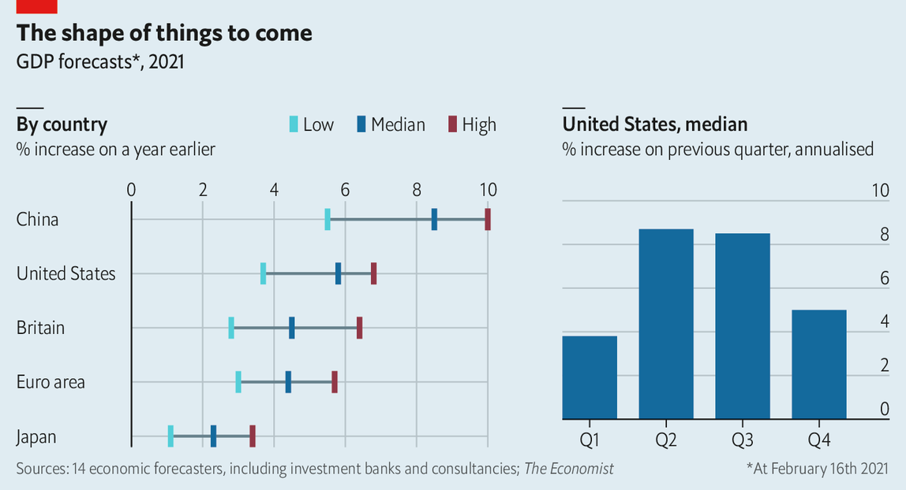
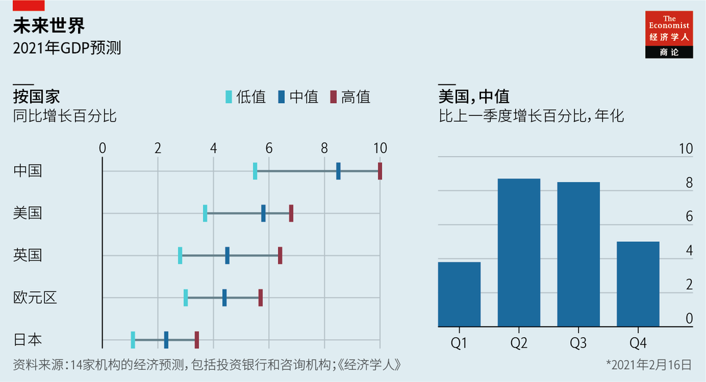

2021-02-27T08:35:56+00:00
Great expectations
远大前程
遠大前程
Economic forecasters are pencilling in heady growth rates
经济预测勾画的增长率令人兴奋
經濟預測勾畫的增長率令人興奮
America is expected to grow at its fastest pace since 1984
预计美国经济将以1984年以来最快的速度增长
預計美國經濟將以1984年以來最快的速度增長
ECONOMIC FORECASTERS are pencilling in heady growth rates for the world’s big economies this year. GDP in America is expected to expand by close to 6% in 2021, the fastest pace since 1984. Growth is expected to be most rapid in the second and third quarters of the year, as vaccinations boost activity and fiscal stimulus takes effect. By contrast the bounce-back in the euro area and Britain is expected to be more modest this year. That reflects a delayed recovery: with economies still locked down, output is expected to contract in the first quarter.
经济预测显示，今年全球各大经济体将出现令人兴奋的增长。2021年美国GDP预计将增长近6%，为1984年以来最快。预计今年第二和第三季度的增长最为迅猛，因为疫苗接种将促进经济活动，而财政刺激措施也会实施起效。相比之下，欧元区和英国今年的经济反弹预计要更温和。这反映出复苏的延迟：考虑到多个经济体仍处于封锁状态，预计第一季度产出将出现收缩。
經濟預測顯示，今年全球各大經濟體將出現令人興奮的增長。2021年美國GDP預計將增長近6%，為1984年以來最快。預計今年第二和第三季度的增長最為迅猛，因為疫苗接種將促進經濟活動，而財政刺激措施也會實施起效。相比之下，歐元區和英國今年的經濟反彈預計要更溫和。這反映出復蘇的延遲：考慮到多個經濟體仍處於封鎖狀態，預計第一季度產出將出現收縮。